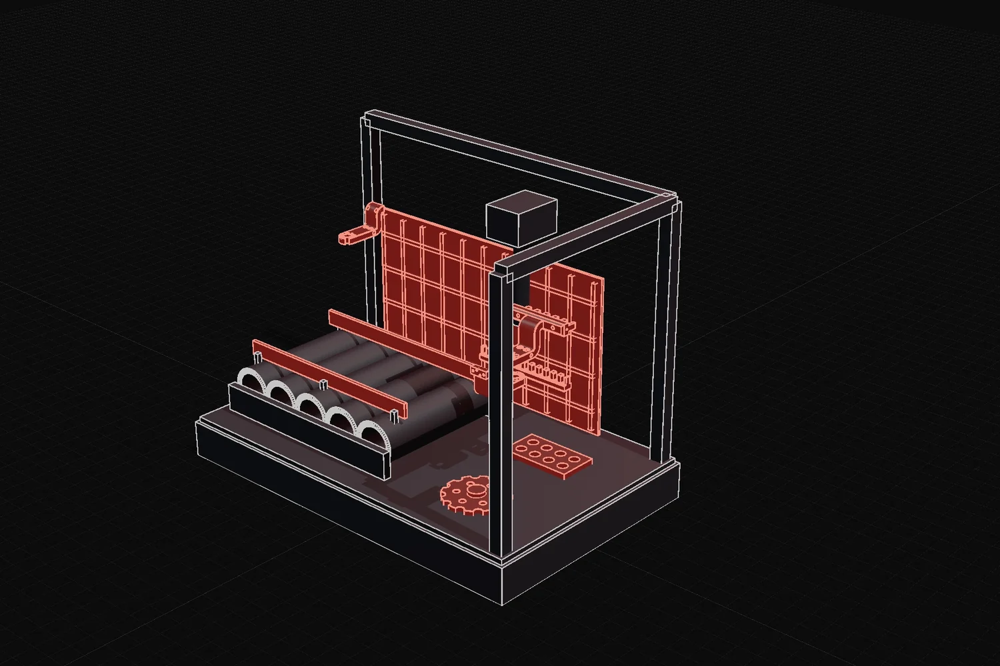
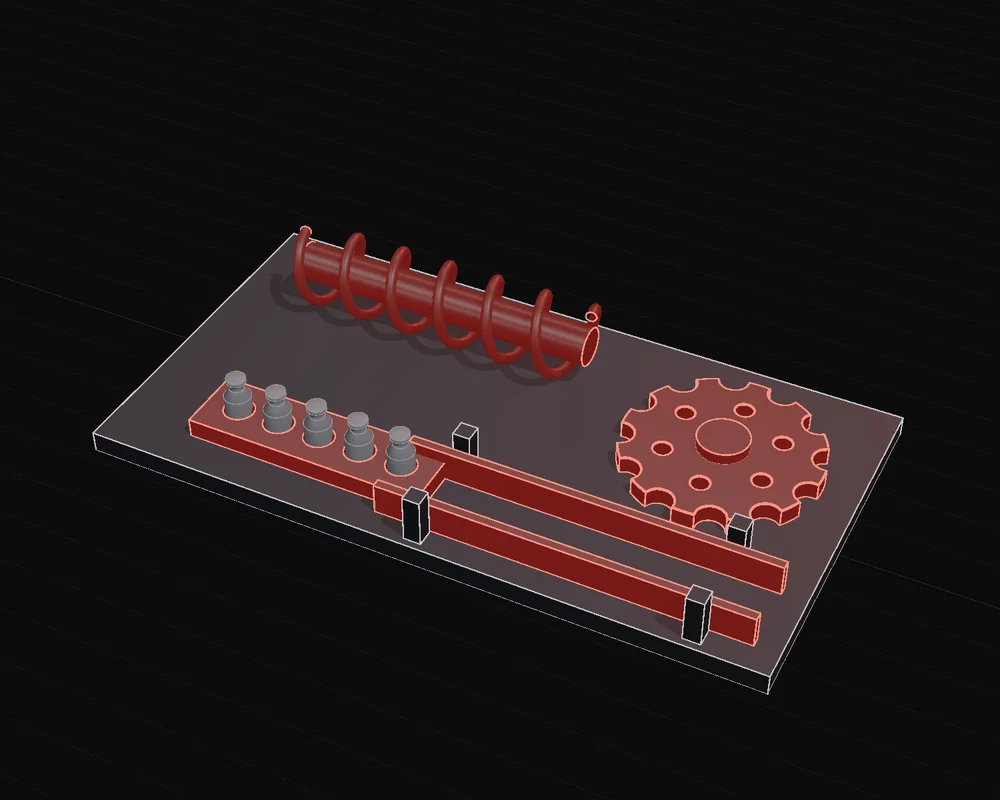
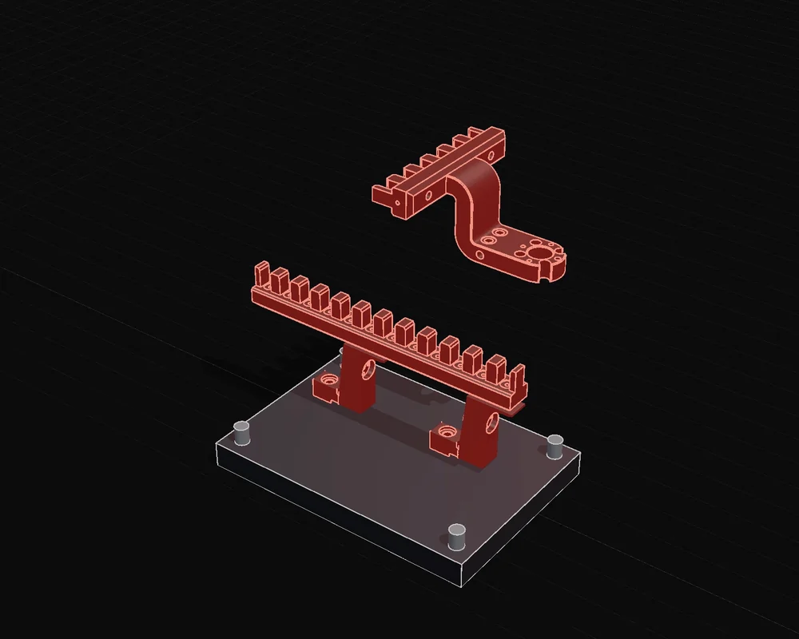
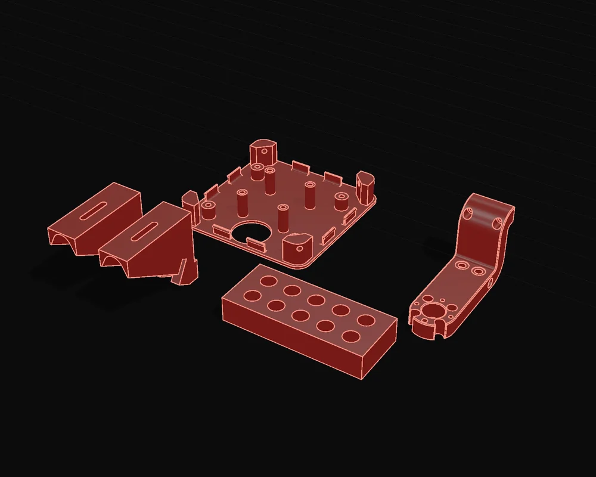
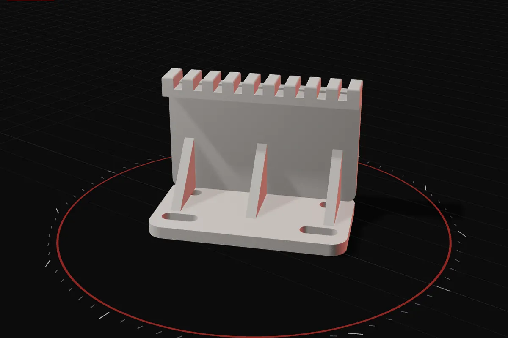

La vostra produzione è già una serie piccola.
Ogni macchina è una commessa: lotti da uno a cinquanta, varianti per ogni cliente, ricambi da garantire per vent'anni. Nessuno stampo si ammortizza su numeri così.
Scheda PDF del settoreGuardate la vostra macchina: le parti in rosso, oggi, si producono meglio in additive.

- Tavola
- TAV 01
- Soggetto
- Cella di automazione con cambio formato e stazione di presa, in isometria
- In rosso
- le parti che si producono in additive
- Resa
- Da CAD, non fotografia
- 0
stampi da ammortizzare: la variante è un file
- 1–50
pezzi a lotto, stesso costo dal primo all'ultimo
- F0–F3
la scala di finitura, fino al colore a specifica
- 24h
lavorative: la fascia la conferma una persona
Il conto che conoscete
Quattro voci del vostro conto economico
Il componente in plastica della vostra macchina oggi passa da uno stampo che non si ripaga, da un minimo d'ordine che riempie uno scaffale, o da una lavorazione dal pieno che costa come il gruppo che serve. E ogni variante ricomincia il giro.
- 01 / 04
Serie piccole senza stampi
Sotto la soglia di ammortamento dell'attrezzatura, il pezzo stampato perde. Si produce alla firma dell'ordine: capitale libero, nessun minimo.
costo per pezzo stabile dal n° 1 al n° 50
- 02 / 04
Varianti per cliente, a costo di file
La versione per il cliente tedesco e quella per il francese sono due file, non due attrezzaggi. La modifica entra in produzione in giorni.
nessun riattrezzaggio · la modifica in produzione in giorni
- 03 / 04
Ricambi e magazzino digitale
L'obbligo ricambi non invecchia a scaffale: si riordina quando serve, identico al lotto precedente, perché il lotto è tracciato. A disegno perduto: rilievo 3D e reverse engineering.
tracciabilità di lotto · riordino identico
- 04 / 04
Consolidamento e peso
Gruppi multipezzo diventano monoblocco: meno assemblaggio, meno codici a distinta, meno punti di guasto. E la poliammide pesa un terzo dell'alluminio.
canali e funzioni integrati nel corpo
Siamo in provincia di Treviso, non dietro un configuratore: il primo articolo lo discutiamo al vostro banco, e per un lotto piccolo siamo dimensionati per lavorarci con margine, non per tollerarlo.
Dentro la macchina
Dove stanno le parti in additive
Tre famiglie di parti che cambiano con il formato, con la commessa e con il cliente: il cambio formato, la presa con i suoi attrezzaggi, i carter con i loro ricambi. I numeri sulle tavole rimandano alla distinta sotto ciascuna.

| Cod. | Componente, materiale e finitura |
|---|---|
| 01 | Coclea a passo variabilePA2200 · SLS · F1 |
| 02 | Stella di formatoPA2200 · SLS · F1 · inserti cedevoli in TPU 90A |
| 03 | Piastra e tazzePA2200 · SLS, o Nylon 12CF · FDM · F0 |
| 04 | Guide di formatoPA2200 · SLS, o Nylon 12CF · FDM · F1 |

| Cod. | Componente, materiale e finitura |
|---|---|
| 05 | Corpo pinza con canale del vuotoPA2200 · SLS · F0 |
| 06 | Dita di presaPA2200 · SLS · F0 · interfacce in TPU 90A |
| 07 | Nido porta-pezzoPA2200 · SLS · F0 |
| 08 | PalletPA2200 · SLS · F0 |

| Cod. | Componente, materiale e finitura |
|---|---|
| 09 | Guida schedaPA2200 · SLS · F0 |
| 10 | Carter con clip e torrettePA2200 · SLS · F2, colore a specifica |
| 11 | StaffaNylon 12CF · FDM · F0 |
| 12 | Rack porta-campionePA2200 · SLS · F1 |
Tavola tecnica, non fotografia · DPG-WEBGeometrie disegnate da noi, non macchine di un costruttore. In rosso: le parti che si producono in additive.
Materiale e finitura sono indicativi: si confermano insieme, sul vostro disegno. La scala da F0 a F3 è spiegata più sotto.
Materiali
I materiali per il settore
Valori indicativi, riferiti al materiale e dichiarati dal produttore della polvere o del filamento. Il pezzo si qualifica sul vostro disegno. Le schede materiale DPG-MAT si ricevono con l'offerta.
La matrice completa dei materiali| Materiale | Processo | Perché qui |
|---|---|---|
| PA2200 (PA12) | SLS | il tuttofare della serie: da −40 a +80 °C sotto carico; compatibile con vapore, EtO e gamma e, sulle linee alimentari, contatto alimentare secondo Reg. (UE) 10/2011, per dichiarazione del produttore (la validazione del ciclo resta vostra). Non è ignifugo: UL94 HB |
| Polipropilene | SAF | chimica di acidi, basi e detergenti; serie medie e alte. Capacità a programma: la disponibilità si verifica sulla commessa |
| Nylon 12CF | FDM | attrezzaggi e staffe: rigidità estrema a peso minimo |
| TPU 90A | SLS | interfacce di presa cedevoli, antiscivolo; contatto pelle secondo ISO 10993-5, -10, -23, dichiarato dal produttore, mai con il prodotto; limite pratico intorno a 70 °C |
| Ultem 9085 | FDM | carter dove serve la classificazione al fuoco: UL94 V-0 a livello di materiale, non del pezzo; il percorso di qualifica sul componente si costruisce insieme |
Casi
In produzione, oggi
Filtrazione industriale: pannelli in serie ricorrente
Per un costruttore di sistemi di filtrazione industriale produciamo in continuativo pannelli tecnici in polipropilene sinterizzato: serie ricorrente, riordino a magazzino digitale, lotto tracciato. Non un prototipo: una fornitura.
Leggi il casoForni professionali: cassetti e profili in lotti piccoli
Per un costruttore di forni professionali produciamo in serie ricorrente cassetti e profili raccogligocce in PA2200: componenti a contatto con il prodotto, pareti da 2,5 mm, riordinati in lotti piccoli, lotto tracciato.
Leggi il casoLe finiture, sul pezzo
Scegliete il pezzo, poi la finitura.
Pezzi tipici di ogni campo, disegnati da noi. Trascinate per ruotarli; su F2 scegliete il colore. Resa da modello 3D, dichiarata: i provini veri si toccano in sede.

Trascinate per ruotare · rotellina per avvicinareIl browser non mostra il 3D: le finiture sono descritte qui accanto.
Il pezzo
La finitura
Il PP in SAF esce grigio dalla macchina: le finiture oltre il grezzo si concordano sul pezzo.
- Il pezzo
- Processo
- Resa
- Da CAD, non fotografia
Preventivo indicativo
La fascia di prezzo, in un minuto
Caricate l'STL o inserite i dati a mano; lo STEP mandatecelo per mail. Il file non viene caricato su nessun server: l'analisi avviene nel vostro browser.
I parametri di questa demo sono di esempio: la fascia non è un'offerta. Sul prezzo reale incide anche la saturazione della camera della macchina. La fascia è indicativa e non vincolante: la conferma è di una persona, entro 24 ore lavorative.
- File
- STL
- Analisi
- nel vostro browser, nessun server
- Processo
- SLS · FDM
- Conferma
- una persona, entro 24 ore lavorative
Domande frequenti
Le domande che arrivano dal vostro settore.
Tutte le domandeSotto la scala delle macchine da tavolo, il pezzo ve lo fate in casa e fate bene. Sopra i volumi da stampo, torna lo stampo, e vi aiutiamo noi a fare il passaggio. E il ricambio strutturale in metallo resta in metallo: quando serve, lo instradiamo alla nostra rete di partner qualificati.
01Quanti pezzi conviene fare in additive?
Sotto la soglia di ammortamento dello stampo: lotti da uno a cinquanta, serie da decine o centinaia l'anno, varianti per cliente. Sopra i volumi da stampo torna lo stampo, e vi aiutiamo a fare il passaggio.
04Quali file servono?
Lo STEP del componente, o l'STL. Per un allestimento completo basta lo STEP AP242 dell'assieme, o il GLB, con i nomi delle parti a distinta: senza disegni 2D e senza impegnare il vostro ufficio tecnico.
05E se il disegno non c'è più?
Si parte dal pezzo: rilievo 3D, reverse engineering, e il ricambio rientra a magazzino, digitale questa volta.
06Il pezzo è tracciato?
Sì: lotto e job sono riportati su ogni pezzo di serie e, dove il capitolato lo chiede, arriva anche il certificato del produttore del materiale.
10Quando non conviene?
Sotto la scala delle macchine da tavolo il pezzo ve lo fate in casa, e fate bene. Sopra i volumi da stampo torna lo stampo. E il ricambio strutturale in metallo resta in metallo: lo instradiamo alla nostra rete di partner qualificati.